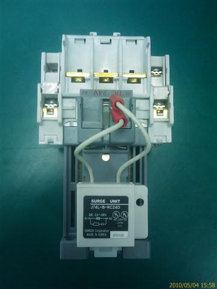
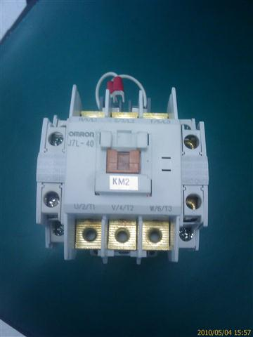

Service History
Subject: NS-7000 KM2 breaker spoilt and tower light no light but buzzer ok
Handler Model: NS-7000
Controller: RC520
Date: 4 May 2010
Symptom
1) Front Operation Panel Power On, MMI shows Power Off.
Suspect no feedback to SPEL.
Send NS-7000 rev.4 wiring diagram and advise customer to trace path of feedback, 24V.
Found KM2 for NS7000 in power box unit N.G. No supply.
No contact despite power ON. Unable to latch. Customer to source parts.
|
 |
 |
2) Tower light unable to light ON but buzzer OK.
Advise customer to replace tower lamp, check Output module of LAMP, switch.
Remarks
KM2 is discontinued, substitute part:
Name : Contactor
P/N: GMD-40